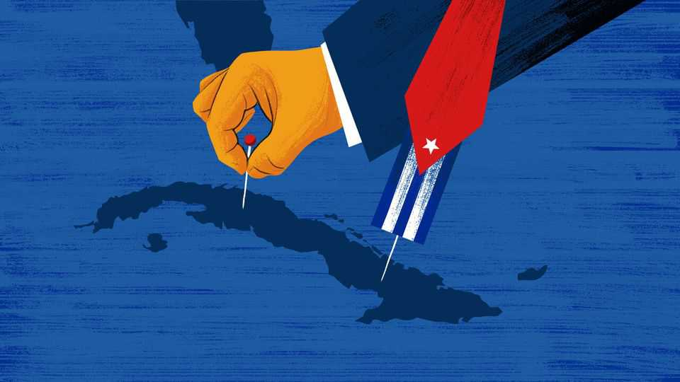

Donald Trump could be the man to save Cuba
Ideological certainties have hurt Cubans for 70 years. Time to give cynicism a chance
June 4th 2026

FOR TOO long, dreams of heroic purity have harmed ordinary Cubans, both on the island and in exile. Cuba’s dwindling population of perhaps 9m rose this morning to yet another day of sweltering, man-made misery. With food, medicine, electrical power and clean water in short supply, Cubans can expect no swift relief from the ruling Communist Party. The island’s leaders are stubborn, lonely men. Fearing that openness will cost them control of their failed revolutionary project, they are trapped in a stance of fist-shaking resistance towards the world’s richest country, less than 200km away.
At the same time, islanders may justly blame another group in thrall to dreams of unyielding defiance, namely, hardline Cuban-Americans. Cuba’s current, extreme isolation may be the work of President Donald Trump. It is his administration that has cut the island off from supplies of oil from Venezuela, Russia and other old friends, triggering power cuts that last most of the day. In just the past few weeks, Mr Trump has frightened away long-standing foreign investors with financial sanctions of unprecedented severity. It is Mr Trump, bent on asserting “American dominance” over his neighbourhood, who sent special forces to snatch Cuba’s close ally, President Nicolás Maduro of Venezuela, and who has since threatened Cuban leaders with their own “friendly takeover”.
But Mr Trump’s “maximum pressure” sanctions build on an embargo that was decades in the making, as successive presidents and congressional leaders bowed to Cuban-American exiles. The diaspora has long had influence as a voter-bloc, notably in Florida, home to 1m-plus Cuban-Americans, among them Mr Trump’s secretary of state, Marco Rubio. Votes are not the group’s only source of strength. After Fidel Castro led revolutionaries to power in 1959, Cuba became a front line between the free world and communism. Even after the Soviet Union fell, Cubans reaching America enjoyed immigration privileges as refugees from tyranny.
In Miami, Orlando Gutiérrez-Boronat, secretary-general of the Assembly of the Cuban Resistance, declares Cuba’s regime closer to collapse than at any time in six decades. He was delighted by the Trump administration’s indictment of Raúl Castro, the former president and the younger brother of Fidel. Mr Castro, who turned 95 on June 3rd, is charged with authorising Cuba’s armed forces to shoot down two civilian aircraft in 1996, killing four Americans. “I hope he is snatched, I hope he is brought to justice,” says Mr Boronat. Even failing an American raid on Havana, Cuban security forces and leaders know there is no impunity for their crimes, he says. Predicting growing protests, he expects a model of regime change resembling that seen in Poland and Czechoslovakia in 1989, “with a little bit of Romania”, (a revolution that saw combat between regime security forces and a dictator’s death).
Other prominent Cuban-Americans worry about a different model, when Mr Maduro’s capture in Venezuela was followed by the installation of his former deputy, Delcy Rodríguez, as a more pliant autocrat. Though Mr Trump praises Ms Rodríguez as a “terrific person”, the continued existence of political prisoners in Venezuela and Mr Trump’s dismissal of Venezuela’s democratic opposition causes angst. “Venezuela is not a model that the community will accept for Cuba,” says Marcell Felipe, chairman of the American Museum of the Cuban Diaspora. His “ideal scenario” is a split within Cuba’s leadership, allowing America to recruit a “white knight” to break the regime and bring about democracy.
Ricardo Zúñiga, a former diplomat who helped lead President Barack Obama’s opening to Cuba, says Trump aides have not found a Cuban Delcy because “that is not how the regime works. It is a consortium of people with the guns and the will to retain power.” He predicts a stalemate for a while yet, possibly involving military strikes that do not change much. He says previous attempts at engagement were thwarted by the Cuban regime’s fear of reforms, but also by the modest carrots that presidents can offer, because by law only Congress can lift the embargo.
There, Mr Trump, a man untroubled by legal niceties or by the will of Congress, has an edge. Joe Garcia, a former Democratic member of Congress from Florida, thinks Mr Trump is better placed than any previous president to end the embargo. Miami hardliners will not rebel, he says. “If Trump says, we are going to kill them with capitalism and Marco Rubio says, they are going to have elections in three years, Cuban-Americans will go for it.” In Congress, if some Republicans rebel, enough Democrats will vote with Mr Trump to lift the embargo for humanitarian reasons, he adds.
The Trump approach lacks ideological certainties of the past. Former Trump officials report that the president does not care greatly about “Cuba as Cuba”, but would like “being the person who overturned the Castro government”. Unmoved by cold-war pieties, his immigration officials have deported Cubans in their thousands and want Cuba to accept many more.
Some Cubans are ready for more pragmatism. In Hialeah, a blue-collar Miami suburb, recently arrived Cuban-Americans can be found queuing outside Cubamax, an online supermarket, travel and shipping company, to ship solar panels, rechargeable lamps, bicycles and dry food to relatives on the island. Mr Trump is less radical than Mr Rubio, says a former English teacher from Cuba, met sending rice and beans to his family. “Rubio wants regime change, but the way he wants it will lead to chaos,” he says.
It should be no surprise if some are ready to abandon ideological rigidities. Purity of disapproval did not finish the Castro regime, which has outlasted 12 American presidents. If dealmaking does the job, and the regime is capable of responding in kind, Mr Trump will deserve any peace prize he wants. ■
Subscribers to The Economist can sign up to our Opinion newsletter, which brings together the best of our leaders, columns, guest essays and reader correspondence.